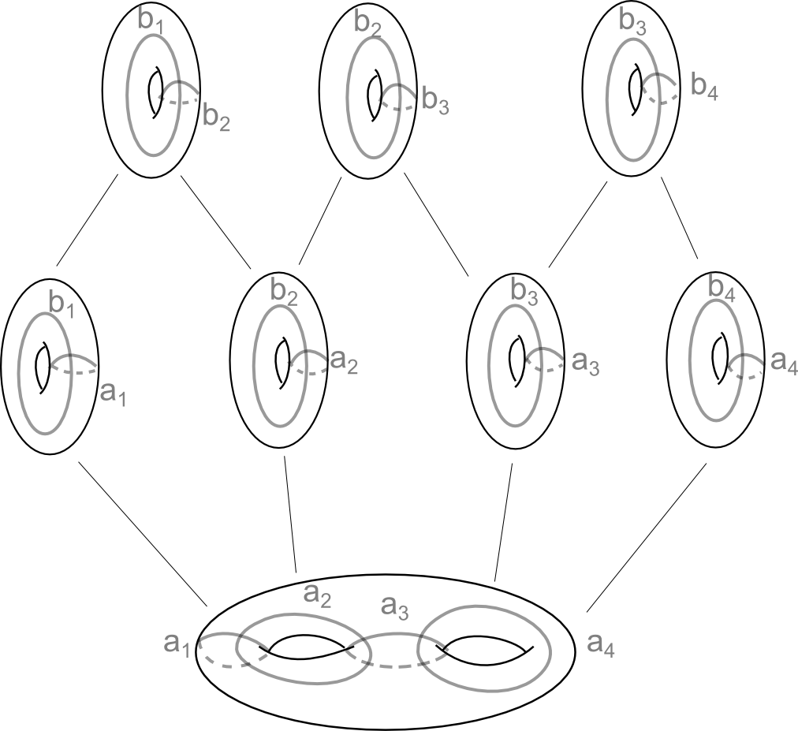

A non relatively hyperbolic partially CAT(-1) group.
Travaux de recherche
Exposés de recherche
- Flot singulier et dimension de Hausdorff au bord de certaines variétés de Gromov-Thurston: Séminaire Teich, Marseille, Février 2019.
- Barely CAT(-1) groups are acylindrically hyperbolic :
- Séminaire Théorie ergodique, Rennes, Novembre 2018.
- Séminaire Gaston Darboux, Montpellier, Juin 2018.
- Séminaire Théorie spectrale et géométrie, Grenoble, Mars 2018.
- Séminaire Teich, Marseille, Mars 2018.
- Séminaire des doctorants Pampers, Rennes, Février 2018
Groupe de travail des doctorants, Marseille
- 19/12/2017 : Mélange du flot géodésique en courbure négative;
- 20/09/2017 : Géométrie Möbius et caractérisation des sphères ;
- 16/05/2017 : Pincement de la courbure des variétés symétriques
de rang 1;
- 16/02/2017 : Variétés de Gromov-Thurston;
- 14/12/2016 : Construction de variétés hyperboliques compactes en
grandes dimensions;
- 20/19/2016 : Théorème de rigidité de Mostow (3);
- 29/09/2016 : Métrique au bord des espaces CAT(-1).
Groupe de travail Topologie en Basse Dimension, Marseille
- 2016/2017 : Géométrie CAT(0), complexes cubiques et groupes
d'Artin à angles droits .
Conférences et écoles d'été
J'ai assisté aux rencontres suivantes :